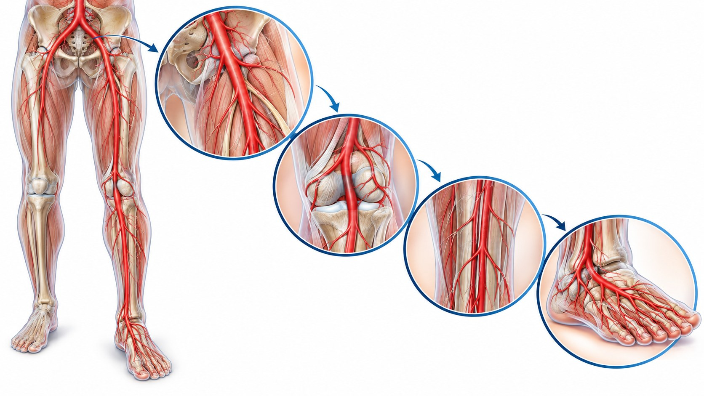

CLINICAL LEARNING · 아산 28회
CLTI의 WIfI 평가와
사지 보존 치료
상처 · 허혈 · 감염에서 재관류와 재건까지
파행의 보행거리 개선과 치료 목표를 구별한다

Angiosome과 target artery pathway
Wound · Ischemia · foot Infection
강의의 W 0–3 기술
| 점수 | 창상·괴저의 기술 |
|---|---|
| 0 | 궤양 없음; 허혈성 휴식기 통증이 있을 수 있음 |
| 1 | 원위 하퇴 또는 발의 작고 얕은 궤양, 괴저 없음 |
| 2 | 뼈·관절·건 노출을 동반한 깊은 궤양; 발가락에 국한된 괴저 |
| 3 | 광범위한 깊은 궤양, 전층 발뒤꿈치 궤양·종골 침범 또는 광범위 괴저 |
교재 표의 ABI와 발목 혈압 기준
| I 점수 | ABI | 발목 혈압 (mmHg) |
|---|---|---|
| 0 | ≥0.80 | >100 |
| 1 | 0.60–0.79 | 70–100 |
| 2 | 0.40–0.59 | 50–70 |
| 3 | <0.40 | <50 |
강의의 fI 0–3 기술
| 점수 | 감염의 범위 |
|---|---|
| 0 | 감염의 증상·징후 없음 |
| 1 | 피부와 피하조직에 국한된 국소 감염 |
| 2 | 피부·피하조직보다 깊은 국소 감염 |
| 3 | 전신염증반응증후군 (SIRS) 동반 |
세 축의 조합을 종합 단계로 해석한다
창상으로 이어지는 혈류를 확보하는 목표를 공유한다
혈류 회복 + 조직 관리 + 재건
혈관 상태와 대사·감염·조직 결손을 함께 다룬다
말초동맥질환의 세 가지 목표
Q&A 모음집 43·45쪽
의뢰 전 → 재개통술 후 → 장기 유지
상처 · 허혈 · 감염에서 재관류와 재건까지